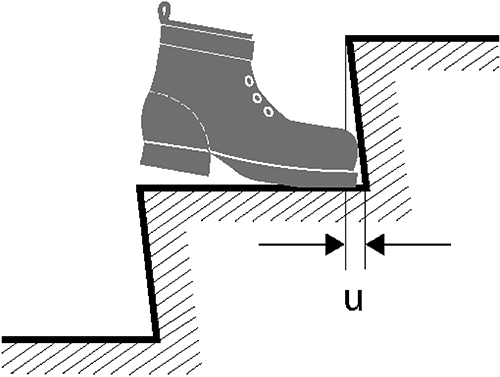
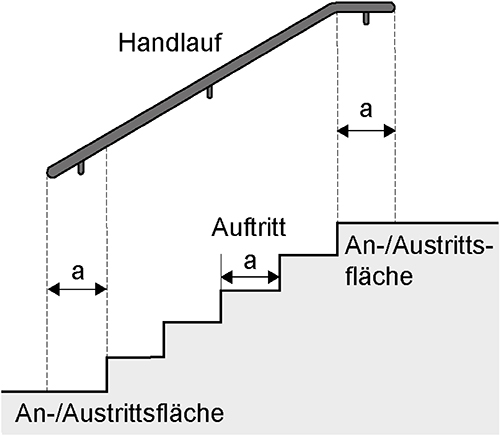

(1) Beim Einrichten und Betreiben von Verkehrswegen sind die besonderen Anforderungen von Beschäftigten mit Behinderungen zu berücksichtigen. Je nach Auswirkung der Behinderung ist insbesondere auf Wahrnehmbarkeit, Erkennbarkeit und Nutzbarkeit zu achten.
(2) Die Querneigung von Verkehrswegen, die von Beschäftigten mit einem Rollator oder einem Rollstuhl benutzt werden, darf nicht mehr als 2,5 % betragen. (ASR A1.8 Punkt 4.1 Abs. 2)
(3) Schrägrampen (geneigte Verkehrswege nach ASR A1.8 Punkt 3.23), die von Beschäftigten mit einem Rollator oder einem Rollstuhl benutzt werden, dürfen eine Längsneigung von 6 % nicht überschreiten. Bei einer Längsneigung von mehr als 3 % sind ab 10 m Länge Podeste mit einer nutzbaren Länge von mindestens 1,50 m vorzusehen. Bei mehr als 6 % Neigung ist die Nutzbarkeit des Verkehrsweges durch geeignete Maßnahmen herzustellen. Geeignet sind z. B. ein Hublift oder ein Elektrorollstuhl, ggf. eine assistierende Person. (ASR A1.8 Punkt 4.1 Abs. 4)
Hinweis: Eine Rampe gemäß DIN 18040-1 Nr. 4.3.8 ist eine spezielle bauliche Anlage, die nicht in dieser ASR behandelt wird.
(4) Für Beschäftigte, die einen Rollator oder einen Rollstuhl benutzen und für Beschäftigte, die eine Fußhebeschwäche haben, müssen Verkehrswege schwellenlos sein. Sind Schwellen technisch unabdingbar, dürfen sie nicht höher als 20 mm sein. Dieser Höhenunterschied ist durch Schrägen anzugleichen. Eine Gestaltungslösung enthält Anhang A1.7: Ergänzende Anforderungen zur ASR A1.7 "Türen und Tore" Abs. 12. (ASR A1.8 Punkt 4.1 Abs. 5)
(5) Für Beschäftigte, die einen Rollator oder einen Rollstuhl benutzen, muss an Schrägrampen, einschließlich deren Podesten, das seitliche Abkommen, Kippen und Abstürzen verhindert werden. Dies kann z. B. mit einer seitlichen Begrenzung, wie einem Radabweiser (Höhe mindestens 0,10 m) oder einer Wand erfolgen. (ASR A1.8 Punkt 4.1 Abs. 6)
(6) Verkehrswegkreuzungen und -einmündungen müssen für Beschäftigte mit Behinderungen je nach Auswirkung der Behinderung wahrnehmbar und erkennbar sein. Wahrnehmbarkeit und Erkennbarkeit werden erreicht, wenn diese Bereiche für Beschäftigte mit Sehbehinderung visuell kontrastierend gestaltet sind. Für blinde Beschäftigte ist das Zwei-Sinne-Prinzip anzuwenden, z. B. durch ein zusätzliches akustisches Signal an Schranken oder Ampeln oder durch taktile Markierungen (z. B. Bodenmarkierung). (ASR A1.8 Punkt 4.1 Abs. 7)
(7) Wird als verkehrssichernde Maßnahme an Verkehrswegkreuzungen und -einmündungen ein Drehkreuz verwendet, ist für Beschäftigte, die eine Gehhilfe oder einen Rollstuhl benutzen, ein alternativer Verkehrsweg einzurichten. (ASR A1.8 Punkt 4.1 Abs. 7)
(8) Bei Maßnahmen des Winterdienstes ist zu berücksichtigen, dass für Beschäftigte, die einen Rollator oder einen Rollstuhl benutzen, die beräumte Breite des Verkehrsweges eine sichere Benutzbarkeit gewährleistet.
Wenn notwendig, sind bei beeinträchtigenden Witterungseinflüssen vorhandene kontrastierende oder taktile Markierungen für sehbehinderte und blinde Beschäftigte frei zu halten oder geeignete temporäre Ersatzmaßnahmen zu treffen. (ASR A1.8 Punkt 4.1 Abs. 8)
(9) Für Beschäftigte, die eine Gehhilfe oder einen Rollstuhl benutzen, müssen Verkehrswege unabhängig von der Anzahl der Personen im Einzugsgebiet ausreichend breit sein. Mögliche Begegnungsfälle, Richtungswechsel und Rangiervorgänge sind zu berücksichtigen. (abweichend von ASR A1.8 Tabelle 2)
(10) Die Mindestbreite von Verkehrswegen ergibt sich für Beschäftigte, die eine Gehhilfe oder einen Rollstuhl benutzen, aus den Breiten von Fluchtwegen nach Anhang A2.3: Ergänzende Anforderungen zur ASR A2.3 "Fluchtwege und Notausgänge, Flucht- und Rettungsplan", Abs. 2.
Für den Begegnungsfall von Beschäftigten, die einen Rollstuhl benutzen
zu gewährleisten.
Abweichend davon ist eine Verkehrswegbreite von 1,00 m ausreichend, wenn der Verkehrsweg bis zur nächsten Begegnungsfläche einsehbar ist. Die Begegnungsfläche muss für den Begegnungsfall von Beschäftigten, die einen Rollstuhl benutzen,
betragen. (abweichend von ASR A1.8 Tab. 2)
Hinweis: Die Bewegungsflächen vor Türen sind zu berücksichtigen (siehe Anhang A1.7: Ergänzende Anforderungen zur ASR A1.7 "Türen und Tore" Abs. 3 und 4).
(11) Für Beschäftigte, die einen Rollator oder einen Rollstuhl benutzen, müssen Gänge zu persönlich zugewiesenen Arbeitsplätzen, Wartungsgänge und Gänge zu gelegentlich benutzten Betriebseinrichtungen mindestens 0,90 m breit sein. Dies kann auch für Beschäftigte, die Gehhilfen benutzen, notwendig sein. Ist eine Nutzung der Gänge nur von einer Seite möglich ("Sackgasse"),
Die Breiten von Verkehrswegen in Nebengängen von Lagereinrichtungen sind im Rahmen der Gefährdungsbeurteilung festzulegen, müssen aber mindestens den Werten nach Tabelle 2 der ASR A1.8 entsprechen.
(12) Für Beschäftigte, die einen Rollator oder einen Rollstuhl benutzen, sind zum Überwinden von nicht vermeidbaren Ausgleichsstufen alternative Maßnahmen zu treffen, z. B. Treppensteighilfen, Treppenlifte oder Plattformaufzüge. (ASR A1.8 Punkt 4.2 Abs. 3)
(13) Für Beschäftigte mit Sehbehinderung müssen Ausgleichsstufen auf Verkehrswegen visuell kontrastierend und für blinde Beschäftigte durch taktil erfassbare Bodenstrukturen gestaltet sein.
Hinweis: Für Beschäftigte mit motorischen Einschränkungen ist im Rahmen der Gefährdungsbeurteilung zu prüfen, ob an Ausgleichsstufen auf Verkehrswegen Handläufe erforderlich sind.
(14) Für Beschäftigte, die einen Rollator oder einen Rollstuhl benutzen, muss der Randzuschlag mindestens Z1 = 0,90 m betragen. Abweichend davon kann der Randzuschlag für den ausschließlichen Fahrzeugverkehr auf bis zu 0,50 m reduziert werden, wenn
(15) Die Summe aus doppeltem Rand- und einfachem Begegnungszuschlag darf auch bei einer geringen Anzahl von Verkehrsbegegnungen nicht herabgesetzt werden. (abweichend von ASR A1.8 Punkt 4.3 Abs. 4)
(16) Personenerkennungssysteme müssen so ausgeführt und angeordnet sein, dass auch Beschäftigte, die eine Gehhilfe, einen Rollstuhl oder einen Langstock benutzen sowie kleinwüchsige Beschäftigte rechtzeitig erkannt werden. (ASR A1.8 Punkt 4.3 Abs. 9 und 10)
(17) Lassen sich Gefährdungen im Verlauf von Verkehrswegen nicht durch technische Maßnahmen verhindern oder beseitigen oder ergeben sich Gefährdungen durch den Fahrzeugverkehr aufgrund unübersichtlicher Betriebsverhältnisse, sind diese Verkehrswege für Beschäftigte mit Behinderung nach Anhang A1.3: Ergänzende Anforderungen zur ASR A1.3 "Sicherheits- und Gesundheitsschutzkennzeichnung" zu kennzeichnen. (ASR A1.8 Punkt 4.4 Abs. 1)
(18) Die Abgrenzung zwischen niveaugleichen Verkehrswegen und umgebenden Arbeits- und Lagerflächen sowie zwischen Wegen für den Fußgänger- und Fahrzeugverkehr muss
(19) Für Beschäftigte, die einen Rollator oder einen Rollstuhl benutzen, sind an Treppen alternative Maßnahmen zu treffen, z. B. Schrägrampen, Treppensteighilfen, Treppenlifte, Plattformaufzüge oder Aufzüge.
(20) Für Beschäftigte mit Sehbehinderung müssen die erste und letzte Stufe des Treppenlaufs mindestens an der Stufenvorderkante visuell kontrastierend gestaltet und erkennbar sein.
(21) Für blinde Beschäftigte ist die oberste Stufe von Treppenläufen am Beginn der Antrittsfläche (siehe Abb. 2) über die gesamte Treppenbreite taktil erfassbar zu gestalten, z. B. durch unterschiedliche Bodenstrukturen.
(22) Für blinde Beschäftigte muss gewährleistet sein, dass Treppen unterhalb einer lichten Höhe von 2,10 m nicht unterlaufen werden können. Dies kann erreicht werden z. B. mit Umwehrungen, Brüstungen, Pflanzkübeln oder durch Möblierung.
(23) Für Beschäftigte mit Gehbehinderung, z. B. mit einer Fußhebeschwäche, müssen Treppen geschlossene Stufen haben. Unterschneidungen sind grundsätzlich nicht zulässig. Abweichend davon ist bei geschlossenen Stufen mit schrägen Setzstufen eine Unterschneidung (u) von maximal 2 cm zulässig (siehe Abb. 1). Ausgenommen sind Treppen, die ausschließlich als Fluchtweg in Abwärtsrichtung genutzt werden. (abweichend von ASR A1.8 Abb. 4)

Abb. 1: Unterschneidung an einer schrägen Setzstufe
(24) Für Beschäftigte, deren motorische Einschränkungen es erfordern (z. B einseitige Armlähmung), müssen Treppen beidseitig Handläufe haben, die nicht unterbrochen sind. Die Handläufe sollen in einer Höhe von 0,80 m bis 0,90 m angeordnet sein, gemessen lotrecht von der Oberkante des Handlaufs zur Stufenvorderkante. (ASR A1.8 Punkt 4.5 Abs. 10)
(25) Für blinde Beschäftigte und Beschäftigte mit Sehbehinderung müssen die Enden der wandseitigen Handläufe am Anfang und Ende von Treppen um das Maß des Auftritts an der An- bzw. Austrittsfläche fortgeführt werden (Abb. 2). Am Treppenauge darf der Handlauf nicht um das Maß des Auftritts fortgeführt werden. Die Enden der Handläufe sollen abgerundet sein und nach unten oder zur Wandseite auslaufen. Halterungen für Handläufe sollen an der Unterseite angeordnet sein.

Abb. 2: Gestaltung der Handläufe an Treppen
(26) Für Beschäftigte mit Sehbehinderung sollen Handläufe sich visuell kontrastierend vom Hintergrund abheben.
(27) Für blinde Beschäftigte sollen an Handläufen taktile Informationen zur Orientierung angebracht sein, z. B. die Stockwerkbezeichnung.
(28) Für kleinwüchsige Beschäftigte sind zusätzliche Handläufe in einer Höhe von 0,65 m vorzusehen.
(29) Sollen Steigeisengänge, Steigleitern oder Laderampen von Beschäftigten mit Behinderungen benutzt werden, sind im Rahmen der Gefährdungsbeurteilung entsprechend den Auswirkungen der Behinderungen im Einzelfall geeignete Maßnahmen zu treffen.
(30) Für Beschäftigte mit motorischen Einschränkungen, für Beschäftigte mit Sehbehinderung und für blinde Beschäftigte sind Fahrtreppen bzw. Fahrsteige nutzbar, wenn die Geschwindigkeit maximal 0,5 m/s beträgt. An Fahrtreppen ist ein Vorlauf von mindestens 3 Stufen erforderlich.
(31) Für Beschäftigte mit Sehbehinderung muss der Übergang zwischen Stauraum und Fahrtreppe bzw. Fahrsteig visuell kontrastierend gestaltet sein, z. B. durch eine hinterleuchtete Fuge oder durch eine farbliche Gestaltung des Kamms.
(32) Für blinde Beschäftigte muss gewährleistet sein, dass Fahrtreppen und Fahr-steige unterhalb einer lichten Höhe von 2,10 m nicht unterlaufen werden können. Dies kann erreicht werden z. B. mit Umwehrungen, Brüstungen, Pflanzkübeln oder durch Möblierung.